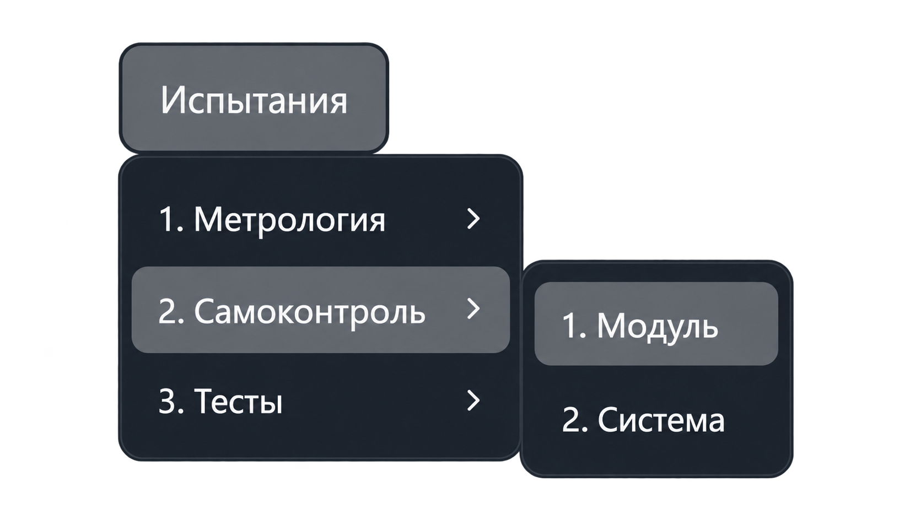
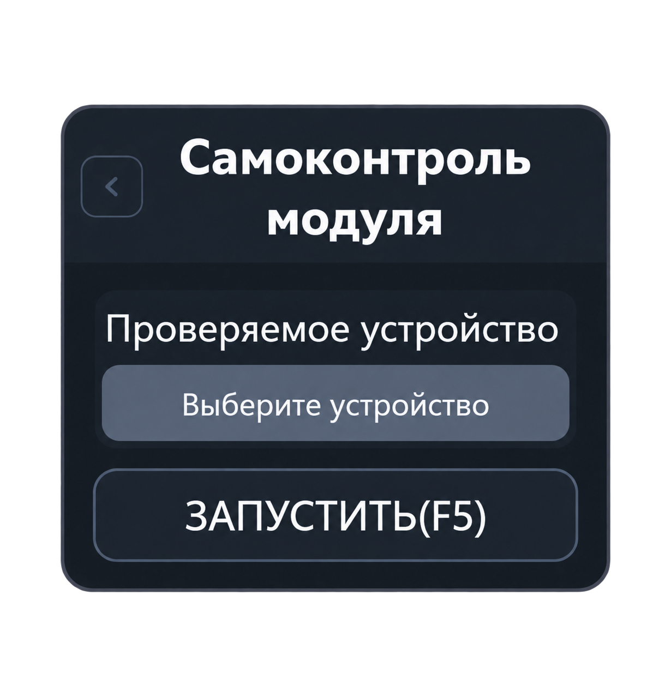
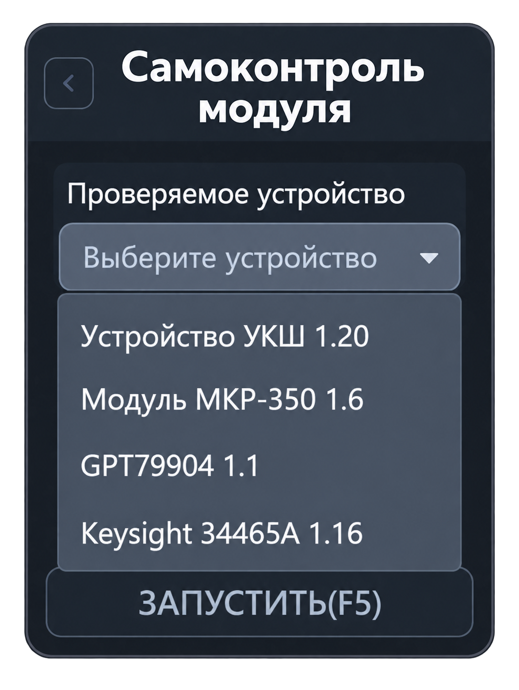

Самоконтроль модуля
Проверяет работоспособность выбранного устройства из конфигурации системы. Откройте «Испытания → Самоконтроль → Самоконтроль модуля».


Проверяемое устройство
Нажмите «Выберите устройство» и выберите нужное оборудование из списка. В нём отображаются названия и адреса устройств из текущей конфигурации.

Поддерживаются самоконтроль устройства коммутации шин (УКШ), модуля коммутации реле (МКР), модуля источника напряжения и тока, пробойной установки и мультиметра. В списке будут только устройства, добавленные в конфигурацию.
Порядок работы
- Выберите проверяемое устройство.
- Нажмите «Запустить» или F5 в активной вкладке.
- Следите за этапами и результатами проверки в протоколе. Выполняйте запросы приложения, если они появляются.
- После завершения просмотрите сообщения о выполненных проверках и обнаруженных ошибках.
Для выполнения самоконтроля используется измерительное оборудование из конфигурации. Если устройство не выбрано или измеритель недоступен, приложение сообщает об этом.
Результаты
Протокол показывает ход самоконтроля и результаты отдельных операций. При ошибке проверьте, к какому устройству и этапу относится сообщение. Дальнейшее действие выбирайте по запросу приложения.
Выбор устройства сам по себе не запускает проверку. Название и адрес в списке должны соответствовать оборудованию, которое нужно проверить.
Для последовательной проверки оборудования используйте «Самоконтроль системы».